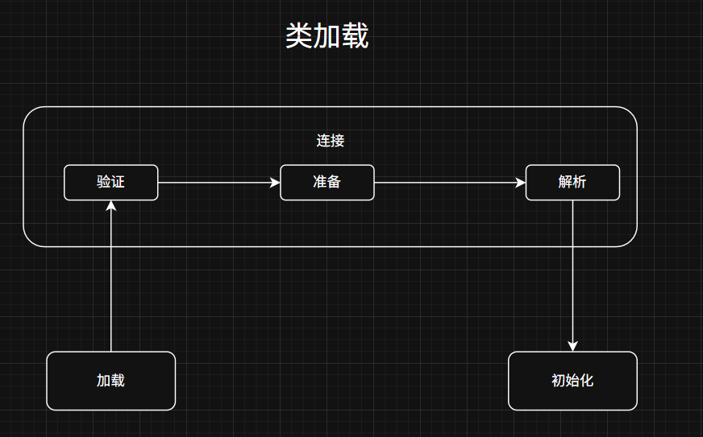
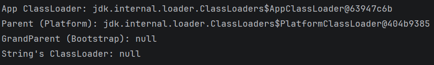
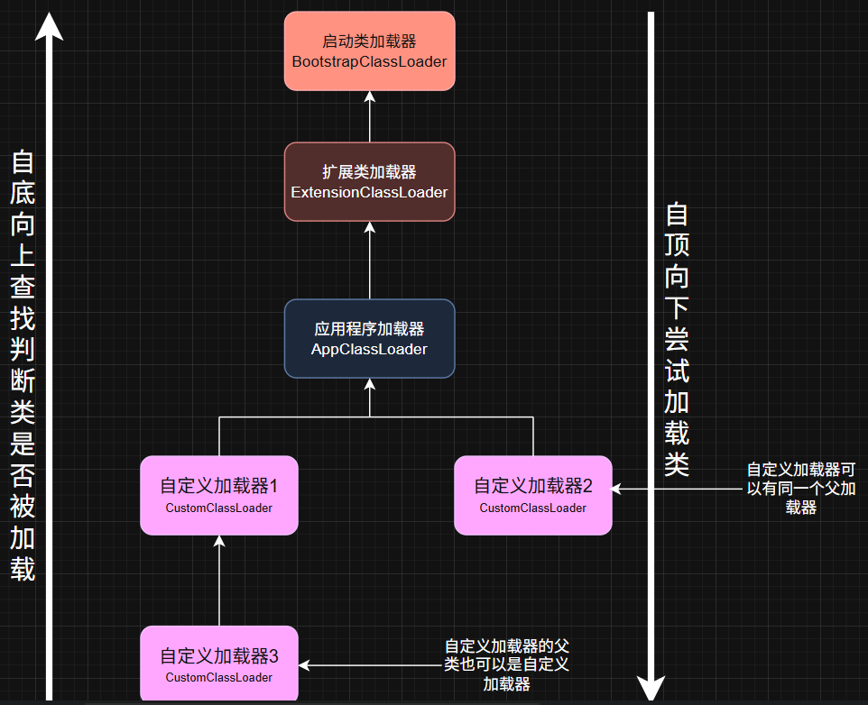

本文参考：JavaGuide - 类加载器详解
# 1. 类加载过程回顾
类加载过程：加载 → 连接 → 初始化。
其中，连接又分为三个阶段，整体流程为：
加载 → 验证 → 准备 → 解析 → 初始化

加载是类加载的第一步，主要完成下面 3 件事情：
- 通过全类名获取定义此类的二进制字节流
- 将字节流所代表的静态存储结构转换为方法区的运行时数据结构
- 在内存中生成一个代表该类的
Class对象，作为方法区这些数据的访问入口
下面是一个自定义类加载器的示例：
package com.syz;
import java.io.*;
public class MyClassLoader extends ClassLoader {
private String classPath;
public MyClassLoader(String classPath) {
this.classPath = classPath;
}
@Override
protected Class<?> findClass(String name) throws ClassNotFoundException {
try {
String fileName = classPath + File.separator + name.replace(".", "/") + ".class";
FileInputStream fis = new FileInputStream(fileName);
ByteArrayOutputStream bos = new ByteArrayOutputStream();
int len;
while ((len = fis.read()) != -1) {
bos.write(len);
}
byte[] bytes = bos.toByteArray();
// 以上是第1步：通过全类名获取定义此类的二进制字节流
// 第2、3步通过 defineClass 方法实现
return defineClass(name, bytes, 0, bytes.length);
} catch (Exception e) {
throw new ClassNotFoundException(name);
}
}
public static void main(String[] args) throws Exception {
MyClassLoader cl = new MyClassLoader("C:\\Users\\ai\\Desktop\\classes");
Class<?> clazz = cl.loadClass("Hello");
Object obj = clazz.newInstance();
// 同一个类名，不同 ClassLoader 加载 → 不同的 Class 对象
System.out.println(obj.getClass().getClassLoader());
}
}这是重写 findClass() 的一个自定义类加载器，当父加载器找不到该类时会执行我们的代码。从代码中可以清晰看到类加载的三个步骤。
# 类加载器的特点
- 类加载器是一个负责加载类的对象，用于实现类加载过程中的"加载"这一步。
- 每个 Java 类都有一个引用指向加载它的
ClassLoader。 - 数组类不是通过
ClassLoader创建的（数组类没有对应的二进制字节流），而是由 JVM 直接生成。
简单来说，类加载器的主要作用就是动态加载 Java 类的字节码（.class 文件）到 JVM 中（在内存中生成一个代表该类的 Class 对象）。 字节码可以是 Java 源程序（.java 文件）经过 javac 编译得来，也可以通过工具动态生成或者通过网络下载得来。
# 2. 类加载器的加载规则
JVM 启动的时候，并不会一次性加载所有的类，而是根据需要去动态加载。也就是说，大部分类在具体用到的时候才会去加载，这样对内存更加友好。
对于已经加载的类会被放在 ClassLoader 中。在类加载的时候，系统会首先判断当前类是否被加载过。已经被加载的类会直接返回，否则才会尝试加载。也就是说，对于一个类加载器来说，相同二进制名称的类只会被加载一次。
# 3. 类加载器的分类
JVM 中内置了三个重要的 ClassLoader：
-
BootstrapClassLoader（启动类加载器）：最顶层的加载类，由 C++ 实现，通常表示为 null，并且没有父级。主要用来加载 JDK 内部的核心类库（
%JAVA_HOME%/lib目录下的rt.jar、resources.jar、charsets.jar等 jar 包和类）以及被-Xbootclasspath参数指定的路径下的所有类。 -
PlatformClassLoader（平台类加载器）：主要负责加载
%JRE_HOME%/lib/ext目录下的 jar 包和类以及被java.ext.dirs系统变量所指定的路径下的所有类。注：Java 9 之后 JDK 进行了模块化改造，原来的扩展机制被废弃，Extension ClassLoader 被改名为 Platform ClassLoader。
-
AppClassLoader（应用程序类加载器）：面向用户的加载器，负责加载当前应用 classpath 下的所有 jar 包和类。
用代码来验证一下：
public class ClassLoaderDemo {
public static void main(String[] args) {
// 获取各个类加载器
ClassLoader appCL = ClassLoaderDemo.class.getClassLoader();
System.out.println("App ClassLoader: " + appCL);
System.out.println("Parent (Platform): " + appCL.getParent());
System.out.println("GrandParent (Bootstrap): " + appCL.getParent().getParent());
// 第三个输出 null，因为 Bootstrap ClassLoader 是 C++ 实现的
// String 是核心类，由 Bootstrap 加载
System.out.println("String's ClassLoader: " + String.class.getClassLoader());
// 输出 null，因为 Bootstrap ClassLoader 在 Java 中不可见
}
}
每个 ClassLoader 可以通过 getParent() 获取其父 ClassLoader，如果获取到的 ClassLoader 为 null，那么该类的父加载器就是 BootstrapClassLoader。
除了这三种类加载器之外，用户还可以加入自定义的类加载器来进行扩展，以满足特殊需求。例如，我们可以对 Java 类的字节码（.class 文件）进行加密，加载时再利用自定义的类加载器对其解密。
除了 BootstrapClassLoader 是 JVM 自身的一部分之外，其他所有的类加载器都是在 JVM 外部实现的，并且全都继承自 ClassLoader 抽象类。这样做的好处是用户可以自定义类加载器，以便让应用程序自己决定如何去获取所需的类。

# 4. 自定义类加载器
前面也说了，除了 BootstrapClassLoader，其他类加载器均由 Java 实现且全部继承自 java.lang.ClassLoader。如果我们要自定义类加载器，需要继承 ClassLoader 抽象类。
ClassLoader 类有两个关键的方法：
protected Class loadClass(String name, boolean resolve)：加载指定二进制名称的类，实现了双亲委派机制。name为类的二进制名称，resolve如果为 true，在加载时调用resolveClass(Class<?> c)方法解析该类。protected Class findClass(String name)：根据类的二进制名称来查找类，默认实现是空方法。
可以回看上方的自定义类加载器示例，我们将 findClass() 重写了，让它在父加载器找不到的时候不会直接报错，而是用我们自己的逻辑来加载。
如果我们不想打破双亲委派模型，重写 ClassLoader 类中的 findClass() 方法即可，无法被父类加载器加载的类最终会通过这个方法被加载。但是，如果想打破双亲委派模型则需要重写 loadClass() 方法。
# 5. 双亲委派模型
类加载器有很多种，当我们想要加载一个类的时候，具体是哪个类加载器加载呢？这就需要提到双亲委派模型了。
简单来说，双亲委派模型的执行流程就是：当一个类加载请求到来时，首先委派给父类加载器，只有当父类加载器无法找到所请求的类时，该类加载器才会尝试自己去加载。
双亲委派模型的核心实现在 java.lang.ClassLoader 的 loadClass() 方法中：
protected Class<?> loadClass(String name, boolean resolve)
throws ClassNotFoundException
{
synchronized (getClassLoadingLock(name)) {
// 首先，检查该类是否已经加载过
Class c = findLoadedClass(name);
if (c == null) {
// 如果 c 为 null，则说明该类没有被加载过
long t0 = System.nanoTime();
try {
if (parent != null) {
// 当父类的加载器不为空，则通过父类的 loadClass 来加载该类
c = parent.loadClass(name, false);
} else {
// 当父类的加载器为空，则调用启动类加载器来加载该类
c = findBootstrapClassOrNull(name);
}
} catch (ClassNotFoundException e) {
// 非空父类的类加载器无法找到相应的类，则抛出异常
}
if (c == null) {
// 当父类加载器无法加载时，则调用 findClass 方法来加载该类
// 用户可通过覆写该方法，来自定义类加载器
long t1 = System.nanoTime();
c = findClass(name);
// 用于统计类加载器相关的信息
sun.misc.PerfCounter.getParentDelegationTime().addTime(t1 - t0);
sun.misc.PerfCounter.getFindClassTime().addElapsedTimeFrom(t1);
sun.misc.PerfCounter.getFindClasses().increment();
}
}
if (resolve) {
// 对类进行 link 操作
resolveClass(c);
}
return c;
}
}结合上面的源码，简单总结一下双亲委派模型的执行流程：
- 在类加载的时候，系统会首先判断当前类是否被加载过。已经被加载的类会直接返回，否则才会尝试加载（每个父类加载器都会走一遍这个流程）。
- 类加载器在进行类加载的时候，它首先不会自己去尝试加载这个类，而是把这个请求委派给父类加载器去完成（调用父加载器
loadClass()方法来加载类）。这样的话，所有的请求最终都会传送到顶层的启动类加载器BootstrapClassLoader中。 - 只有当父加载器反馈自己无法完成这个加载请求（它的搜索范围中没有找到所需的类）时，子加载器才会尝试自己去加载（调用自己的
findClass()方法来加载类）。 - 如果子类加载器也无法加载这个类，那么它会抛出一个
ClassNotFoundException异常。
# 双亲委派模型的好处
双亲委派模型是 Java 类加载机制的重要组成部分，它通过委派父加载器优先加载类的方式，实现了两个关键的安全目标：避免类的重复加载和防止核心 API 被篡改。
JVM 区分不同类的依据是类名加上加载该类的类加载器，即使类名相同，如果由不同的类加载器加载，也会被视为不同的类。双亲委派模型确保核心类总是由 BootstrapClassLoader 加载，保证了核心类的唯一性。
例如，JVM 会优先将 java.lang.Object 这类核心类的加载请求交给 BootstrapClassLoader 处理；但实际上，ClassLoader#preDefineClass 还会在定义阶段校验类名，任何以 java. 开头的类名都会被拒绝，因此不能通过自定义加载器去伪造核心类。
可能有人会问：绕过双亲委派模型不就可以了么？
然而，即使攻击者绕过了双亲委派模型，Java 仍然具备更底层的安全机制来保护核心类库。
ClassLoader的preDefineClass方法会在定义类之前进行类名校验。任何以"java."开头的类名都会触发SecurityException，阻止恶意代码定义或加载伪造的核心类。（这点不是本文重点，知道 JDK 中有另外的保护措施即可。）
# 6. 打破双亲委派模型
如果想打破双亲委派模型，需要继承 ClassLoader 并重写 loadClass() 方法（而不是只重写 findClass()）。
重写 loadClass() 方法之后，我们就可以改变传统双亲委派模型的执行流程。例如，子类加载器可以在委派给父类加载器之前，先自己尝试加载这个类，或者在父类加载器返回之后，再尝试从其他地方加载这个类。具体的规则由我们自己实现，根据项目需求定制化。